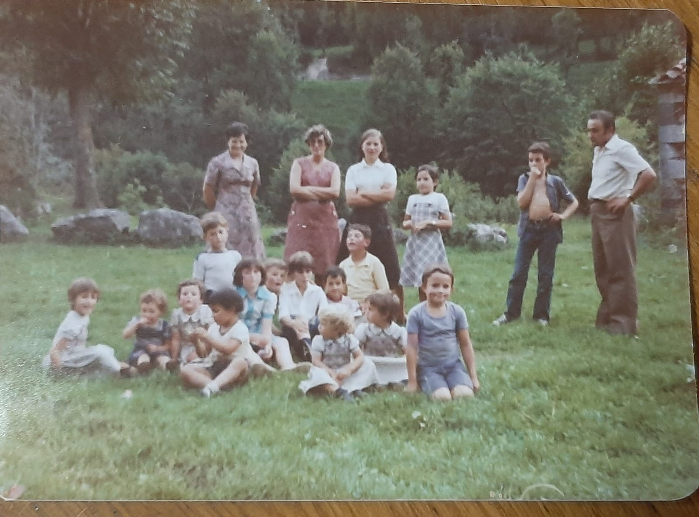

1975

- Lourdes (4 años)
- Cristina (meses)
- Marta (2 años)
- Félix (5 años)
- Inés (2 años)
- José Antonio (2 años)
- Rosalina (34 años)
- María Elena (9 años)
- Elena
- María Victoria (4 años)
- Mariano (10 años)
- Beatriz (3 años)
- Isabel (meses)
- Maribel (12 años)
- Ana Rosa (7 años)
- Santiago (5 años)
- Tomás (10 años)
- Santiago (38 años)
Foto de Félix